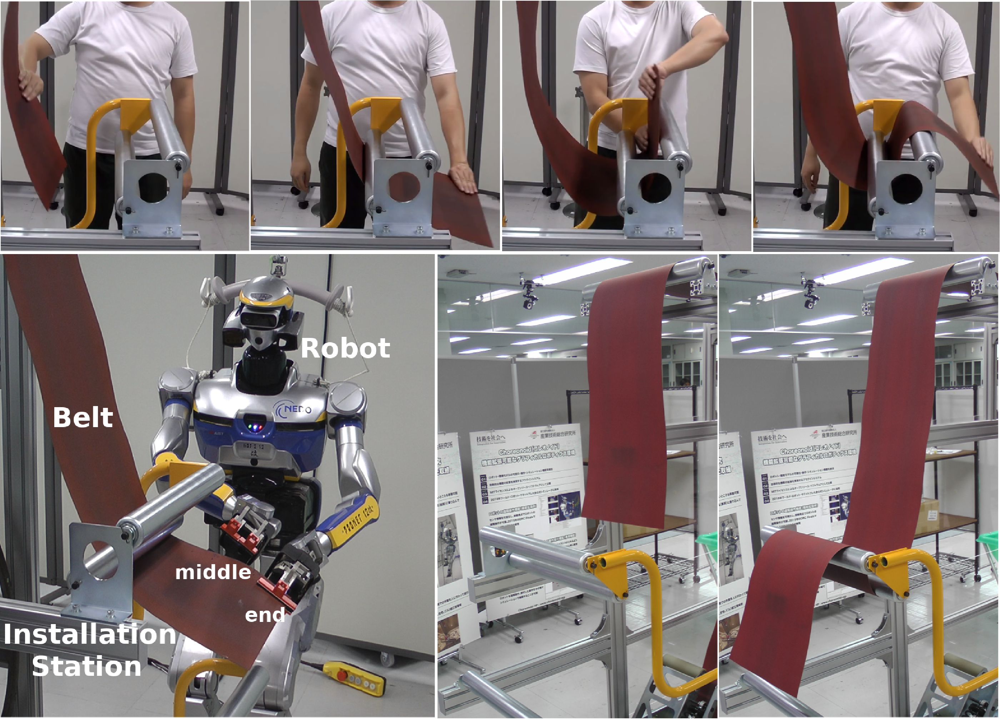
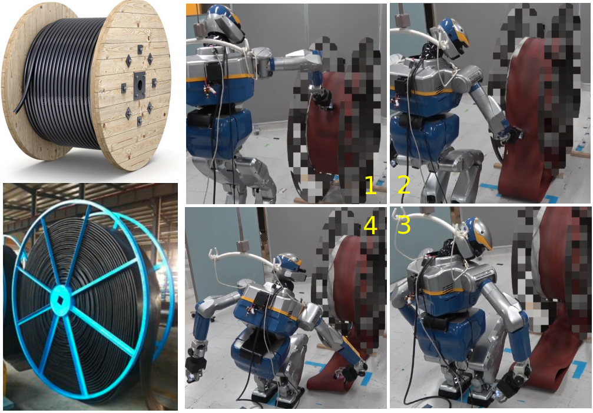
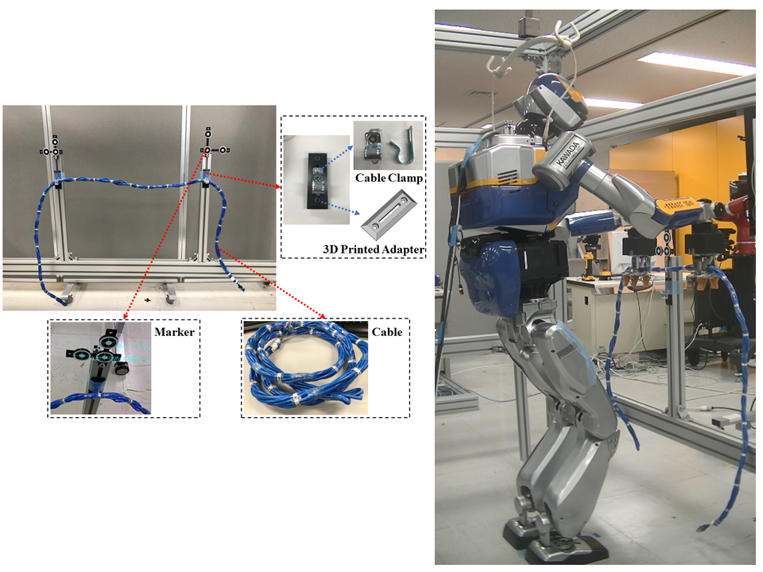
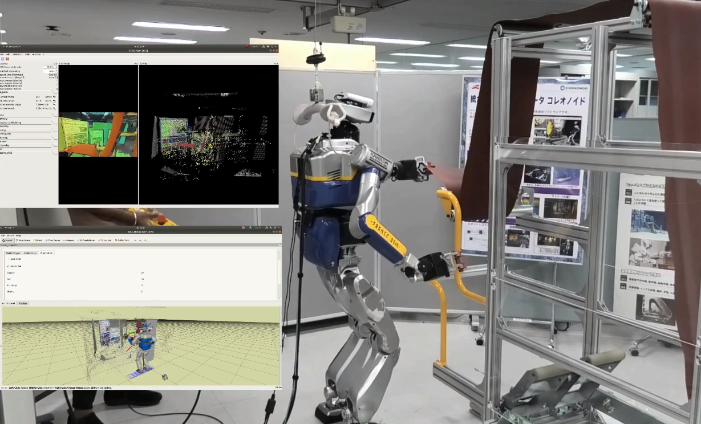
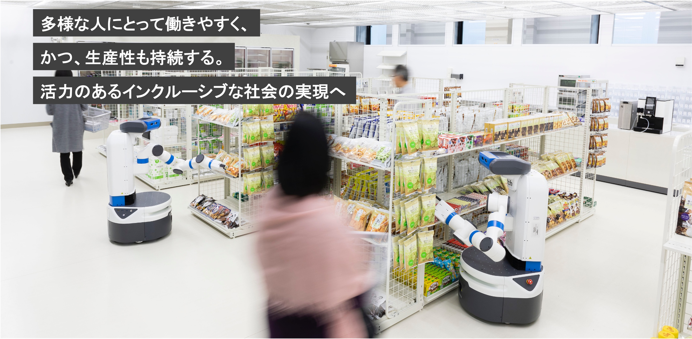
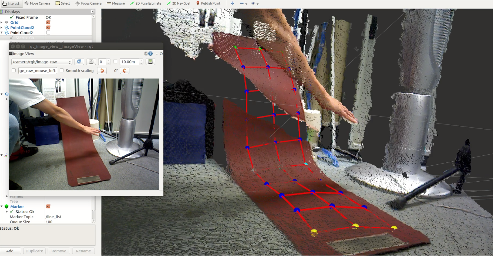
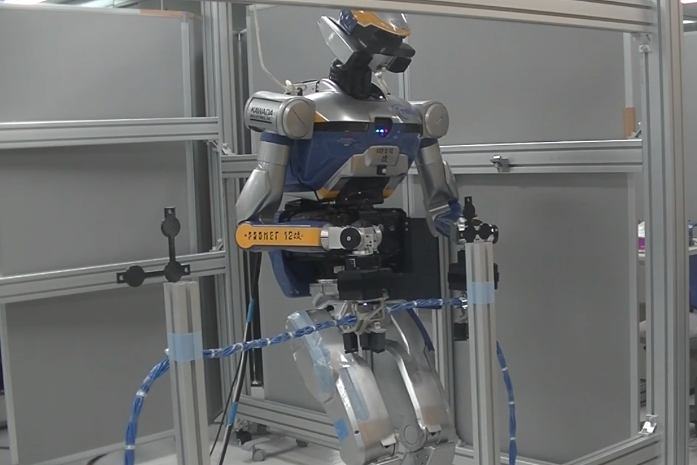

|
Yili Qin
Linkedin |
GitHub |
Lab |
CV |
履歴書
|
|
I received the M.S. degree from the University of Tsukuba in 2019. Now, I am a Ph.D. student at the University of Tsukuba and the laboratory CNRS-AIST Joint Robotics Laboratory (JRL) in AIST, Japan.
My research interests include robot control, motion planning, manipulation planning, task planning, behavior prediction and optimal decision-making, which involve robotics and AI, and make robots more autonomous. I hope to be able to use robots to help us complete heavy, repetitive and tedious tasks.
|
Research
My Ph.D. research focuses on investigating the approaches for robotic manipulation of long deformable objects with 2D plane structure like belts and strips, mainly in the following aspects:
- vision-based shape detection and state estimation;
- position-based prehensile manipulation and force-based non-prehensile manipulation;
- manipulation planning in industrial assembly.
For my master's, I worked on robotic manipulation planning of long deformable objects with 1D linear structure, e.g. cables and ropes.
|
|

|
Dual-arm Mobile Manipulation Planning of a Long Deformable Object in Industrial Installation
Yili Qin, Adrien Escande, Fumio Kanehiro, Eiichi Yoshida
IEEE Robotics and Automation Letters (RA-L), will present in IROS 2023, USA
Oct. 2023
|
|

|
Vision-based Belt Manipulation by Humanoid Robot
Yili Qin, Adrien Escande, Arnaud Tanguy, Eiichi Yoshida
IEEE/RSJ International Conference on Intelligent Robots and Systems (IROS), 2020, USA
Oct. 2020
|
|

|
Cable Installation by a Humanoid Integrating Dual-Arm Manipulation and Walking
Yili Qin, Adrien Escande, Eiichi Yoshida
IEEE/SICE International Symposium on System Integration (SII), 2019, France
Jan. 2019
|
-
JRP: BeltAssembly
Project Info: A cooperation project with a Fortune Global 500 company in Europe.
Description: In the production hall, use a humanoid robot to unwind a long flexible belt from a bobbin, and assemble the belt to some specified rollers in an installation station.
Keywords: Manipulation planning, dual-arm regrasp for deformable object, loco-manipulation, whole-body motion control.
|

|
|
-
AIST-ICPS
Project Info: A strategic research project "Industrial Cyber-Physical Systems (ICPS)" in AIST.
Description: In convenience stores, use mobile manipulator Fetch robot to load and unload items.
Keywords: Manipulation planning, mobile manipulation, object detection.
|

|
|
-
JRP: PushBigObject
Project Info: A cooperation project with a Fortune Global 500 company in Europe.
Description: In the production hall, use a humanoid robot to move a very big and heavy (>100kg) industrial bobbin to desired position by humanoid robot.
Keywords: Loco-manipulation, whole-body motion control.
|
-
TrackDOShape
Project Info: A pre-research project for project "JRP: BeltAssembly".
Description: Visual detection and tracking of 1D and 2D long deformable objects (e.g. ropes, cables and belts) in 3D space with RGB-D camera.
Keywords: Point-set registration, shape detection.
|

|
|
-
JRP: InstallCable
Project Info: A subproject of COMANOID. Project COMANOID is a research project with aerospace corporation Airbus, part of the European Horizon H2020 program.
Description: Inspired by the scenario in the aircraft manufacturing industry, use a humanoid robot to install a long cable to some specified clamps.
Keywords: Task planning, primitive-based motion planning, deformable linear object installation, whole-body motion control.
|

|
|
|
![[NEW]](./assets/img/new.png) Our paper "Dual-arm Mobile Manipulation Planning of a Long Deformable Object in Industrial Installation" by Y. Qin, A. Escande, F. Kanehiro and Y. Eiichi is accepted by IEEE Robotics and Automation Letters (RA-L).
Our paper "Dual-arm Mobile Manipulation Planning of a Long Deformable Object in Industrial Installation" by Y. Qin, A. Escande, F. Kanehiro and Y. Eiichi is accepted by IEEE Robotics and Automation Letters (RA-L).
{kind=link}